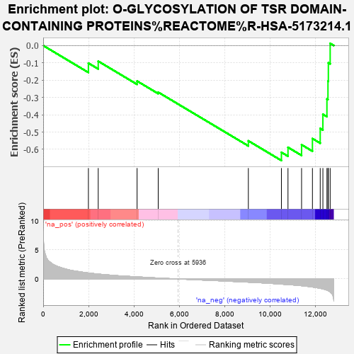
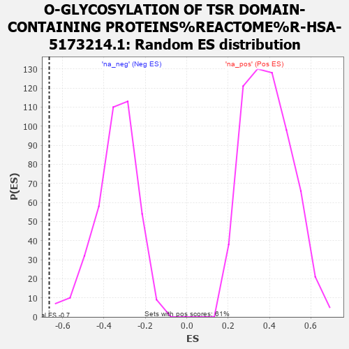

| | | Dataset | carrankstim |
| Phenotype | NoPhenotypeAvailable |
| Upregulated in class | na_neg |
| GeneSet | O-GLYCOSYLATION OF TSR DOMAIN-CONTAINING PROTEINS%REACTOME%R-HSA-5173214.1 |
| Enrichment Score (ES) | -0.6645249 |
| Normalized Enrichment Score (NES) | -1.9436321 |
| Nominal p-value | 0.0025445293 |
| FDR q-value | 0.0995325 |
| FWER p-Value | 0.6 |
Table: GSEA Results Summary

Fig 1: Enrichment plot: O-GLYCOSYLATION OF TSR DOMAIN-CONTAINING PROTEINS%REACTOME%R-HSA-5173214.1
Profile of the Running ES Score & Positions of GeneSet Members on the Rank Ordered List

Fig 2: O-GLYCOSYLATION OF TSR DOMAIN-CONTAINING PROTEINS%REACTOME%R-HSA-5173214.1: Random ES distribution
Gene set null distribution of ES for O-GLYCOSYLATION OF TSR DOMAIN-CONTAINING PROTEINS%REACTOME%R-HSA-5173214.1